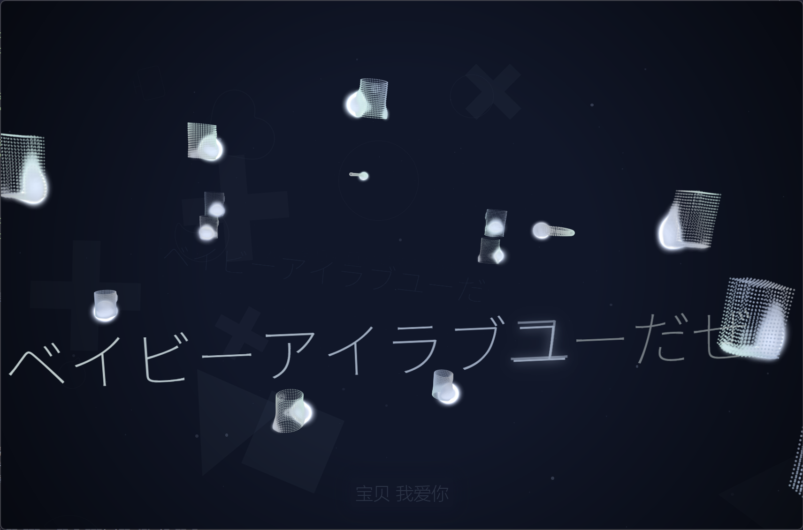
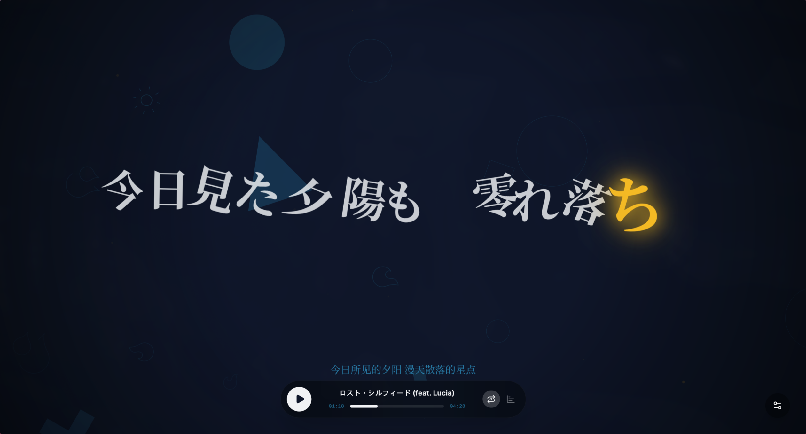

镜台和莫奈
首屏用的就是这两个。镜台把正在唱的句子放在中间，上一句退到后面，下一句从远处过来；周围是带网格的方块和柱体，镜头跟着往前推。

莫奈背景从封面裁出，先做模糊，再按明暗套上主题色。可以铺满全屏，也可以只占半边，并做轻微平移。
功能
- 歌词样式
- 除了镜台，还有浮名、流光、倾诉、时计等全屏样式，参数可以调，窗口大小变化时会重新排版。
- 歌词和封面
- 在线歌曲会自动载入歌词和封面。本地曲库可以匹配在线歌词，也可以读同目录的 LRC、VTT、TTML 等文件。
- 主题配色
- 可以根据歌曲和歌词生成背景颜色与视觉参数。
- 曲库
- 网易云、酷狗、QQ 音乐、Navidrome，以及本地文件。桌面端还接入波点音乐、YouTube Music、Spotify 和汽水音乐。
- Android
- 用 Capacitor 打包，手机里跑 Node 后端处理音乐服务。有原生播放、媒体会话、锁屏控制，也可以把摄像头画面当作 AR PLAY 背景。
- 桌面和网页
- 有 Windows、macOS、Linux 桌面版，也可以部署成网页。
其他样式

下载
当前版本是 1.0.1，Android 版本号 1219。安装包还没有公开，发布后会放在 GitHub Releases，这一页的链接也会一起更新。
说明
| 名称 | AMedia |
|---|---|
| 版本 | 1.0.1 |
| Android 版本号 | 1219 |
| Android 包名 | com.aradio.music |
| 系统要求 | Android 7.0 及以上（API 24）。桌面版支持 Windows、macOS、Linux。从源码或网页运行需要 Node.js 24 及以上。 |
| 技术 | React、TypeScript、Vite。Android 用 Capacitor，并内嵌 Node。桌面版用 Electron。 |
| 曲库 | 网易云、酷狗、QQ 音乐、Navidrome、本地文件。桌面端另有波点音乐、YouTube Music、Spotify、汽水音乐。 |
| 许可 | AGPL-3.0 |
| 上游 | 基于 Folia，并借鉴了 Mineradio |